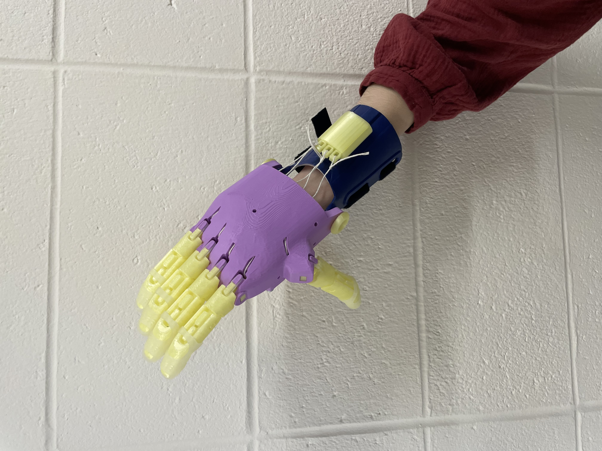

Project 4
Project 4 Overview
The goal of this project was to introduce the idea of open source hardware and apply this concept to produce a working prototype of an assistive device. The device that was produced through this project was the e-NABLE Phoenix Hand. The Phoenix Hand V2 has a grip that allows a user without a limb difference to make use of the device, making this version ideal for educational purposes in an engineering classroom. However, only the Phoenix Hand V3 would be of any real use to a person with a limb difference. The V2 was printed for this project.
Learn to Read the Ecosystem
Although the documentation for this assistive device is pretty thorough, it leaves much to be desired. The greatest weakness of the documentation, in my experience, has been the findability. It was generally quite difficult to find the complete documentation. As I never saved the documentation to my computer, I had to go through this process several times and, although I could find the simple, two-page documentation quite easily, the full thorough version of the documentation was much more difficult to find. This could very easily be resolved by simply adding a dedicated documentation section under the resources listed in the description of the Phoenix Hand.
The documentation’s strongest points were visual documentation, completeness, and clarity. Although there were occasionally some very specific details (and largely unimportant details) left out – like which fingers should be tied to which rod of the tensioner – which occasionally gave us pause during assembly, these oversights were generally few in number and insignificant in magnitude. Every step was generally very specific, provided the parts needed, and was accompanied by helpful visual aids.
Finally, the documentation was somewhat weaker in regards to troubleshooting and accessibility. I didn’t notice any attempt to address possible failures in the description of each step, which could very easily allow a mistake to be made early on and only be noticed when it's too late. The documentation also requires good vision and English fluency (I couldn’t find the documentation in any other languages), however it is relatively accessible for people using various 3D printing hardware.
The 3D model repository for the Phoenix Hand V3 was much easier to navigate as compared to the Phoenix Hand V2. While in the V3 repository each model was stored individually as its own file, the V2 sorted the models into groups, such as a group of pins and a group of finger joints, allowing one to easily import the correct types and number of models. This grouping ensures that a complete set of all necessary components is printed without having to import the same model several times and check that you’ve printed enough of each part.
.
3D Printing
In order to print all parts, the space of 2 Prusa MINI base plates was required, necessitating 2 prints jobs. One print job contained the fingers joints and pins, while the other contained the palm and the handle. Since multiple parts were being printed in each print job, it was necessary to add rafting to both jobs. The rafting ensured that no part would come loose during printing and ruin the print by drifting across the base plate. On our first print, we used a rafting of 4 layers, but switched to a rafting of 2 layers, which was still effective at holding all parts to the baseplate, but was much easier to remove. Eventually, a third print was required to print the tensioner box and pins. A spare wrist brace was used in our assembly, avoiding a fourth print.
Fingers with pins, and palm in PrusaSlicer:


Assembly
The assembly process was generally quite straightforward. The first phase of assembly consisted simply of fastening the palm and fingers together using the correct pins for the correct joints, which was a trivial process. The second phase consisted of preparing through heat molding and attaching the wrist brace using the correct pins, which was also quite easy, owing in large part to the intuitive heat-molding station in the classroom.
Difficulty began to arise as the palm was fitted with rubber bands and string, which both required a fair amount of dexterity to attach. This process was greatly aided by the use of tweezers, however difficulty continued to arise in the threading of the string through the shafts in the back of the palm, and in tying the string tightly enough to both the tip of each finger and the tensioner. Some difficulty also arose in the acquisition of screws for both the back of the tensioner and for the handle to be secured to the palm. Since there were no designated screws in the classroom for each purpose, a number of screws had to be experimented with for the handle and, especially, the tensioner, until an adequate fit was found.



Documentation Improvements
One of our greatest difficulties in the process of producing the hand, in terms of pure time consumption, was the location of the correct files to print. Therfore, we felt that the greatest improvement to the documentations would be a repository map, indicating which models should be downloaded and imported into PrusaSlicer. Ideally, this map could be made specifically for each common printer. A mock-up is provided below, demonstrating the utility of this sort of documentation.

Modification
One of the greatest weaknesses with the final hand design was simply how difficult it was to pick up or hold onto any object. One factor contributing to this difficulty was the poor scaling between the pins and the fingers when each is printed at 150% scale. We, therefore, decided to try a couple of larger variations for the pins. In addition to the 150% scale pins, pins were printed at 160% scale and 170% scale. While the 150% scale pins proved to be too small, the 160% scale pins were a near perfect fit. The addition of these pins greatly improved the stability of the hand joints. Although these improved pins weren't implemented into a fully strung hand, even just comparing the free motion of the unstrung fingers with and without the improved pins, the improved pins were shown to greatly reduce rotation along unintended axes. Fingers ceased to show such noticeable rotation along the a parallel plane to the hand, and instead only rotate along a plane parallel to that of the hand, as intended in this model of hand mechanics.
Original vs Modified (black) Pins:


Final Reflection
Although the e-NABLE Phoenix Hand makes great strides towards making prosthetics more accessible, it falls short of some of its promise. When looking at the Phoenix Hand through the lens of inclusive design, one can begin to see that this Phoenix Hand is not an entirely accessible piece of open source hardware. It requires access to 3D printers, some technical skills, and decent dexterity to complete the assembly. This limits access to these prosthetics from the very people who would require them, due to the level of dexterity needed to be able to construct the hand. It would likely be extremely difficult to put this hand together with a limb difference.
While the Phoenix Hand may not be a perfect solution to the issue of prosthetics accessibility, it performs extremely well at allowing each individual user to modify the hand for their specific needs, allowing the design to be easily expanded to cover many possible use cases. This allows for users to be involved in the design process of the product that they will receive, leaving the potential for the Phoenix Hand to be tailored to the needs of many people.
Although open source assistive devices clearly hold many benefits, not only for those who need them in their daily lives, but also in an educational setting like this, the Phoenix Hand, while also highlighting many strengths of open source design through its potential for modification, reveals some of the weaknesses of this volunteer driven model. A lack of rigorous quality control and somewhat unprofessional documentation are some of the greatest weaknesses of open sources design exposed by this project. Despite these weaknesses, however, the Pheonix Hand remains a well-developed design with an undeniable positive impact. Although it is certainly worthy of criticism, the Phoenix Hand should be celebrated for the ideals it represents and for its high impact relative to its cost.
Capstone Connection
This project highlights the important distinction between buildability and usability. Although the Phoenix Hand is very easily buildable, making it incredibly accessible, it isn't a very practical prosthetic for everyday use, with its extremely limited grip strength and dexterity. In the capstone project, I hope to focus more on the usability of a design, rather than its ease of construction. Although this might be difficult to do in the limited timespan that we have, meaning that the design has to be at least somewhat easy to put together, I would like to place as much emphasis as possible on the practical use cases of the design. Rather than simply designing a solution for a given problem, I would like to design the solution for a given problem.